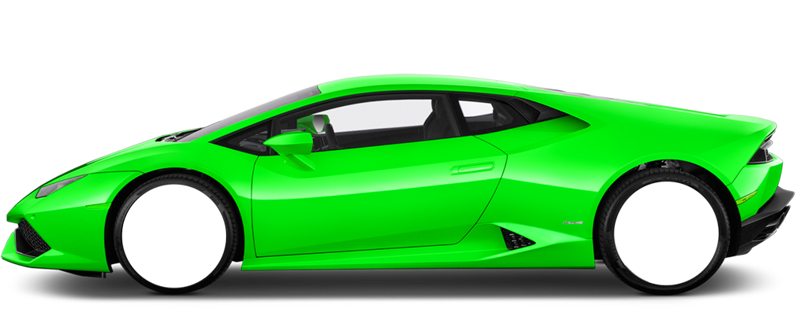

Bron: Alfa png[Foto]. (2017, 8 mei). Geraadpleegd op 27 maart 2019, van https://www.essencemaserati.com/showroom/2018/Alfa+Romeo/Stelvio/SUV.html

Bron: Lambo png[Foto]. (2017, 8 mei). Geraadpleegd op 27 maart 2019, van http://www.pngpix.com/download/blue-lamborghini-huracan-lp-610-4-spyder-side-view-car-png-imageBron: Porsche png[Foto]. (2017, 8 mei). Geraadpleegd op 27 maart 2019, van hhttps://www.porsche.com/international/models/cayenne/cayenne-coupe-models/